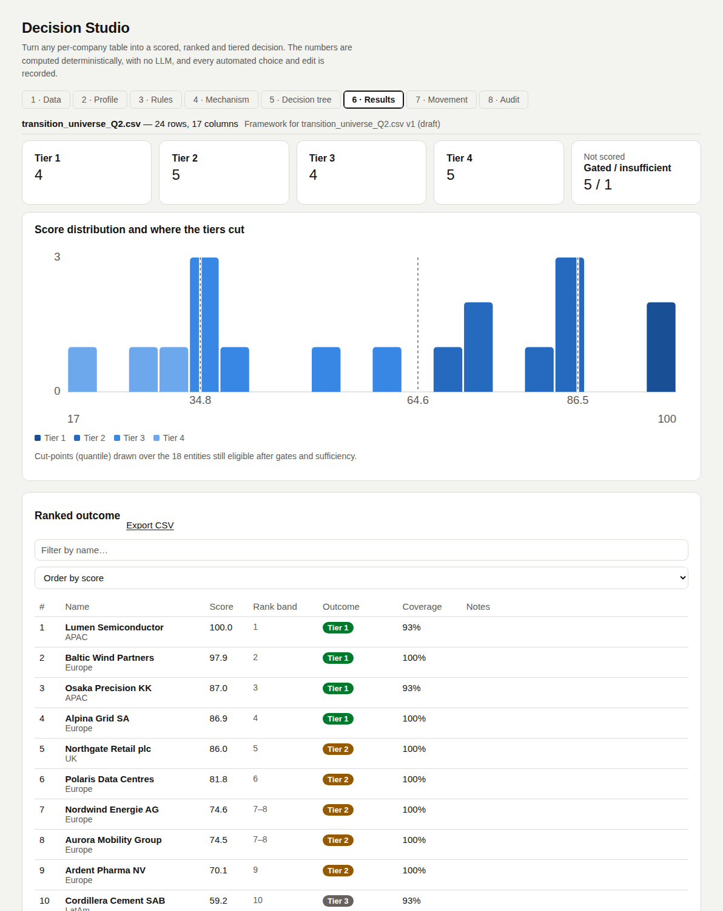
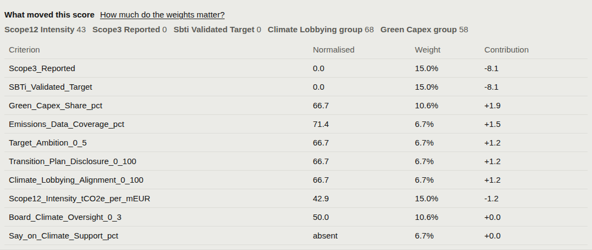
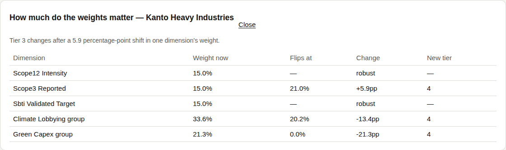

Results
You decideShows the outcome with its uncertainty next to it. Every number here comes back from the engine.
What is on the tab
| Element | Shows |
|---|---|
| Tier cards | Count per tier, with its action when one is set, plus a card for gated / insufficient. |
| Score distribution | Histogram with the cut lines, and which cut-point method actually ran. |
| Ranked table | #, Name, Score, Rank band, Outcome, Coverage, Notes. Order by score or by leverage. |
| Explain (per row) | Each criterion's normalised value, weight and contribution to the score. |
| Export CSV | The ranked outcome as a file. |
Rank stability
Each entity is scored under four specifications. Its best and worst rank form the rank band.
| Specification | Changes |
|---|---|
| The framework | as configured |
| Equal weights | every criterion the same |
| Entropy weights | discriminating power |
| Contrasting normalisation | percentile or min–max → z-score; z-score → min–max |
Leverage
Where engagement moves the most: not who scores worst, but big positions far from perfect.
leverage = size × (100 − score) / 100
Sensitivity
On demand, per entity. Each dimension's weight is swept across a range.
| Result | Meaning |
|---|---|
| Tipping point | The weight at which the tier flips, the change needed, and the new tier. |
| Robust | No weight in the range changes the tier. |
| Smallest change | The minimum over all dimensions: the figure a committee asks for. |
Level overrides (levels mode)
Set one criterion's level for one entity by hand.
| Needs | Result |
|---|---|
| Level, reason (3+ characters), your name | Replaces the rules' level before averaging; the tier moves with it. |
| The rules' level stays on record; notes say Override: criterion 1 → 5; one audit entry per override. | |
| An override that no longer fits (entity gone, criterion removed, level off scale) is dropped and flagged. |
In the tool
Screenshots of Decision Studio running on the sample table, taken with the app as it is on main.






Functions applied
What runs at this step, in order, with an example. Blue rows run on GoRules ZEN; the rest is Python in backend/arp/decision/.
| Function | Engine | Example |
|---|---|---|
rank_ranges · ranks_of | Python | Kanto Heavy Industries → rank 12, band 11–16 across the four specifications. |
tipping_points | Python | Kanto → Scope 3 weight 15.0% → 19.1% flips it to Tier 4; Climate Lobbying 33.6% → 14.4% does too. Smallest change 4.1 points. |
leverage (apply_mechanism) | Python | Vega Power, 47 bps × (100 − 25.1) / 100 → 35.2, the highest. |
apply_overrides | Python | Levels mode only: a reviewer's level replaces the rules' level before averaging; the rules' level stays on the result. |
Code and formulas
The formula each function applies, and its source as it is in the repository.
rank_rangesbackend/arp/decision/stability.py:20–32band = [min rank, max rank] over the four specifications.
Python source (13 lines)
def rank_ranges(specification_scores: list[list[float | None]]) -> tuple[list[int | None], list[int | None]]:
"""Per entity, the best and worst rank it holds across every
specification. Entities masked out of the eligible field stay
unranked in all of them."""
all_ranks = [ranks_of(scores) for scores in specification_scores]
n = len(specification_scores[0]) if specification_scores else 0
minima: list[int | None] = []
maxima: list[int | None] = []
for i in range(n):
values = [ranks[i] for ranks in all_ranks if ranks[i] is not None]
minima.append(min(values) if values else None)
maxima.append(max(values) if values else None)
return minima, maximaleveragebackend/arp/decision/mechanism.py:440leverage = size × (100 − score) ÷ 100, for scored entities with a size.
Python source (1 line)
leverage=(size * (100.0 - row_score.score) / 100.0) if (size is not None and row_score.score is not None and status == "scored") else None,tipping_pointsbackend/arp/decision/sensitivity.py:21–113For each dimension, scale its weight from 0 up in steps, re-apply the framework, and take the share nearest today's at which the tier changes. None → robust.
Python source (93 lines)
def tipping_points(
dataset: Dataset,
config: MechanismConfig,
*,
entity_keys: list[str] | None = None,
steps: int = _DEFAULT_STEPS,
) -> list[EntitySensitivity]:
"""How far each dimension's weight must move before an entity changes
tier.
This is the answer to the only question a committee reliably asks of a
ranking: how much does this depend on the weights you happened to
choose? A tier that survives any weight in the searched range is
reported as robust; one that flips after a two-point change is
reported as exactly that.
Cost is (dimensions x steps) applications of the mechanism, so the
stability band is switched off for the intermediate runs and `steps`
is deliberately modest. It is an on-demand analysis, not part of
scoring.
"""
# Rules do not depend on weights: evaluate them once, not once per step.
if config.rule_graph:
dataset, _ = apply_rules(dataset, config.rule_graph)
config = config.model_copy(update={"rule_graph": None})
baseline = apply_mechanism(dataset, config, with_stability=False)
wanted = set(entity_keys) if entity_keys else None
targets = [e for e in baseline.entities if e.status == "scored" and (wanted is None or e.entity_key in wanted)]
if not targets or not config.dimensions:
return []
baseline_shares = _dimension_shares(config)
# dimension id -> list of (weight share %, {entity_key: tier})
sweeps: dict[str, list[tuple[float, dict[str, int | None]]]] = {}
for dimension in config.dimensions:
observations: list[tuple[float, dict[str, int | None]]] = []
for step in range(steps):
multiplier = _MAX_MULTIPLIER * step / (steps - 1)
variant = copy.deepcopy(config)
for candidate in variant.dimensions:
if candidate.id == dimension.id:
candidate.weight = max(0.0, dimension.weight) * multiplier
if sum(max(0.0, d.weight) for d in variant.dimensions) <= 0:
continue
result = apply_mechanism(dataset, variant, with_stability=False)
share = _dimension_shares(variant)[dimension.id]
observations.append((share, {e.entity_key: e.tier for e in result.entities}))
sweeps[dimension.id] = observations
out: list[EntitySensitivity] = []
for entity in targets:
points: list[TippingPoint] = []
for dimension in config.dimensions:
current = baseline_shares[dimension.id]
flips = [
(share, tiers.get(entity.entity_key))
for share, tiers in sweeps.get(dimension.id, [])
if tiers.get(entity.entity_key) != entity.tier
]
if not flips:
points.append(
TippingPoint(
dimension_id=dimension.id,
dimension_name=dimension.name,
current_weight_pct=round(current, 1),
robust=True,
)
)
continue
share, new_tier = min(flips, key=lambda f: abs(f[0] - current))
points.append(
TippingPoint(
dimension_id=dimension.id,
dimension_name=dimension.name,
current_weight_pct=round(current, 1),
flip_weight_pct=round(share, 1),
delta_pct=round(share - current, 1),
new_tier=new_tier,
robust=False,
)
)
deltas = [abs(p.delta_pct) for p in points if p.delta_pct is not None]
out.append(
EntitySensitivity(
entity_key=entity.entity_key,
name=entity.name,
tier=entity.tier,
score=entity.score,
tipping_points=points,
min_delta_pct=round(min(deltas), 1) if deltas else None,
)
)
return out